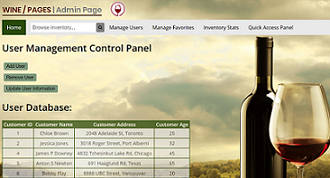
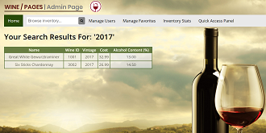
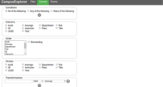
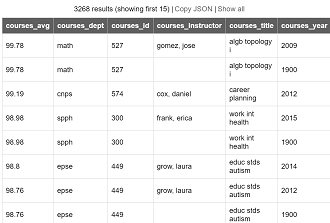

Academic Projects
Administration Web Page for a Database
Duration of Development: March 2020 - April 2020
Tools & Technologies Used: Backend-SQL, MySQL, Apache Server; Frontend-HTML5, CSS, PHP
Project Type: Group Project (2 partners)
Function: A web interface for managing users/data of a database and displaying data.
Implementation:
- Responsible for the frontend design and layout, logo, database normalization (BCNF) to reduce redundancy, and some SQL queries.
- Contributed to the database schema design.
Other Notes: We used an XAMPP web server package for local hosting.
Link to Repo:



Campus Explorer Web Application
Duration of Development: September 2019 - December 2019
Tools & Technologies Used: Backend-TypeScript, NodeJS; Testing-Mocha, Chai; Other-Restify, JSON
Project Type: Group Project (1 partner)
Function: A Web Application
Implementation:
-
Responsible for the implementation of: a query engine (for data aggregation and retrieval), a JSON dataset validation system, a JSON query validation system (semantic and syntactic checking), webserver and REST endpoints, and basic timetable creation (course/room scheduling).
-
Performed black-box, white-box, integration, and end-to-end tests using Mocha and Chai frameworks.
Other Notes:
Further project dependency configuration is required. In the project folder, run the following commands:
1.yarn install [downloads the packages specified in package.json]
2.yarn build [compiles the project]
3.yarn test [runs the entire test suite |*buggy*: we recommend running tests modules individually]
To request access to the private CampusExplorer repo: Contact Me


PNG Image Manipulation Algorithms
Duration of Development: November 2017
Tools & Technologies Used: Backend-C++; Visual Studio
Project Type: Individual
Function: Given a PNG image, performs manipulations and outputs the resulting image. Operated via command line.
Implementation:
- Responsible for implementing PNG image compression, decompression, rotation, and cropping algorithms )recursive) utilizing a quad-tree data structure.
Other Notes:
- Each layer of the tree contains nodes that are an average of all its children.
- For compression, if the average of each child node is within some tolerance level from the parent, the child nodes are deleted
Link to Repo:
Bus Transit Android App
Duration of Development: July 2017 – August 2017
Tools & Technologies Used: Backend-Java; Other-Android Studio, Genymotion, IntelliJ, JUnit
Project Type: Individual
Function: A mobile Android app that displays the bus stops nearest to the user, while providing a visual illustration of the bus routes and arrival times for a user-selected stop.
Implementation:
- Responsible for the completion of the backend (and some minor frontend components) of a skeleton mobile Android app.
- Used Test Driven Development (TDD) and Object Oriented (OO) programming techniques.
- Created a JSON parser which organizes route and arrival data provided from a Translink (Metro-Vancouver Transit Authority) API.
- Conducted tests and debugging using JUnit.
Link to Repo: